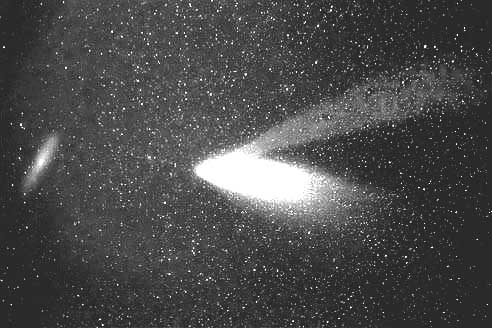

문제 1
혜성이 태양 근처를 지나갈 때, 혜성에서 떨어져 나온 먼지 입자들이 두 개의 꼬리를 형성하는 것을 볼 수 있다. 아래 주어진 사실들을 참고하여 혜성에 두 개의 꼬리가 형성되는 이유와 그 형태에 대하여 설명해 보시오.
사실1) 질량을 가진 두 물체 사이에는 질량의 곱에 비례하고 거리의 제곱에 반비례하는 힘(중력)이 작용한다.
사실2) 두 전하 사이에는 전하의 곱에 비례하고 거리의 제곱에 반비례하는 힘(전기력)이 작용하며, 일반적으로 이 힘은 중력에 비해 월등히 큰 힘이다.
사실3) 전자기파는 에너지뿐만 아니라 운동량도 가지고 있어서 피사체에 압력을 가할 수 있다.
사실4) 태양에서는 빛(전자기파)뿐만이 아니라 상당한 양의 대전된 입자들이 쏟아져 나오는데 이를 태양풍(태양에서 불어오는 바람)이라 한다.
